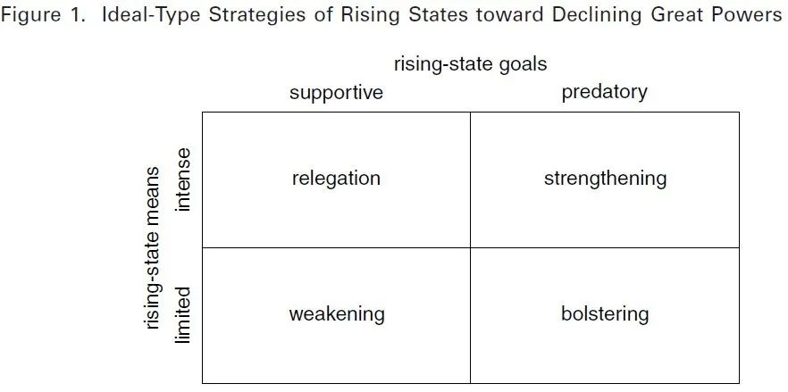
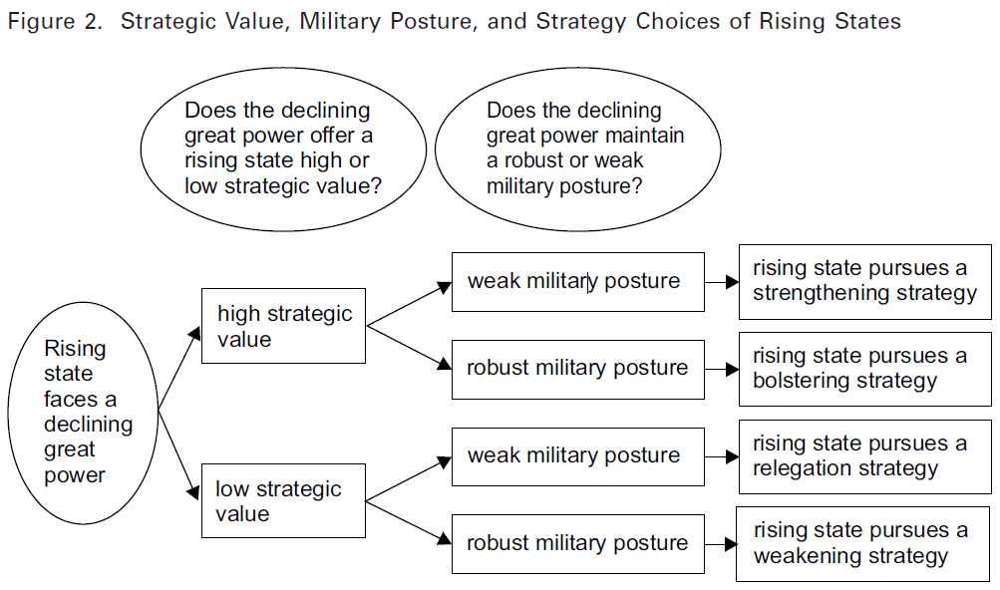

收录于合集

作品简介
【作者】 Joshua R. Itzkowitz Shifrinson是波士顿大学弗雷德里克·帕迪全球研究学院助理教授，研究兴趣为国际安全和外交史的交叉点，特别是大国兴衰和大战略的起源。他尤其擅长研究1945年以来的大国政治,以及美国的欧洲和亚洲政策。
【编译】 徐一凡（国政学人编译员，立命馆大学国际关系学院）
【校对】 刘颖哲
【审核】 姚寰宇
【排版】 卢奕财
【美编】 聂涵琳
【来源】 Shifrinson, J. (2020). Partnership or predation? How rising states contend with declining great powers. International Security, 45 (1), 90-126.
期刊简介
《国际安全》（International Security）是经过国际和国家安全领域同行评议的顶级学术期刊，其刊发的论文主题广泛，涵盖战争与和平等传统安全问题与环境、人口、人道主义、恐怖主义等时新的安全议题。它成立于1976年，由哈佛大学贝尔弗科学与国际事务中心（Belfer Center for Science and International Affairs at Harvard University）编辑，麻省理工学院出版社（MIT Press）出版，每年四期。根据Journal Citation Reports显示，其2019年影响力因子为5.432，在国际关系类SSCI期刊中排名1/95。
伙伴关系还是弱肉强食？
崛起国如何应对衰落国
Partnership or Predation?
How Rising States Contend with Declining Great Powers
Joshua R. Itzkowitz Shifrinson
推荐语
本文就崛起国对衰落国的战略提出了“掠夺理论”，认为衰落国的战略价值和军事姿态是影响崛起国战略的关键。作者指出，崛起国并不总是想“掠夺”衰落国；在某些条件下，崛起国甚至会支持衰落国。作者对国际安全和外交史的深入洞悉为崛起国- 衰落国关系提供了富有见地的参考，也令人对当下国际安全形势产生新的发想。
导读
权力分布的转移是国际关系不稳定的一个主要诱因。在一些国家相对崛起，另一些国家相对衰落时，战略不稳定性就会提升，机遇之窗会开启或关闭，合作与竞争的方式将会改变。许多学者和政策制定者认为，在这种情况下，崛起国会趁机寻求从衰落国处获益，将其打倒或移除大国行列，使得情势变得更加复杂多变。
然而，在实践中，崛起国在面对衰落国时会采取不同的战略。崛起的罗马最终击垮了衰落的迦太基帝国。相似地，在1990年前后，崛起的美国将衰落的苏联赶出了东欧。即便如此，并非所有的崛起国都会以同样的决心（assertiveness）“掠夺”（prey）衰落国；国家在投入资源和承担风险以求改变权力分配方面的意愿彼此不同。同样重要的是，崛起国也有可能支持衰落国。比如，在1900年前后，崛起中的德国就改善了与奥匈帝国的关系，并在一战前夜支持奥地利对抗俄国。
何者能够解释这些行为呢？崛起国何时“掠夺”或支持衰落国，又为何有不同的决心呢？国际关系学界对此尚未有足够的研究。作者希望通过本文来弥补这一缺陷。
作者将提出一个可以解释崛起国对衰落国采取的战略的理论，将其命名为“掠夺理论”（predation theory）。然后，作者将用战后欧洲国际关系的事例检验这一理论。“掠夺理论”主张，只有在如下情况中，崛起国才会激烈地“掠夺”衰落国：崛起国认为衰落国不能够帮助其对抗其他大国，并且衰落国缺少威慑或打败崛起国扩张的军事手段。在此种情况下，崛起国能够通过尽可能地削弱衰落国来获取收益。反过来，当崛起国认为衰落国可以用来对抗其他大国对手时倾向于支持衰落国。当军事平衡向不利于衰落国的方向变动时，崛起国会加强对衰落国的支持。在这种情况下，崛起国有动机阻止衰落国变得更弱，因为不这么做的话会使得崛起国在其他大国威胁中被孤立。
01
崛起国的战略和衰落国
衰落国（declining great powers）是指在一段时间内相对于一个或多个其他大国开始失去相当一部分军事和经济能力的国家。从定义上看，这一过程会导致一个或多个国家在相对意义上的崛起。崛起国对衰落国采取的战略对后者来说尤其重要：通过加大或减少对衰落国的威胁，崛起国可以提升或降低衰落国在国际体系（international system）中的地位和安全。
1.1 崛起国的目的：掠夺或支持（predatory or supportive）
崛起国的战略会在目的和手段两个维度上有所不同。目的指的是崛起国在衰落国是否继续作为大国存在这一问题上的偏好。一些崛起国想要达到掠夺性目的，将衰落国移除出大国的行列。相对地，崛起国也可能通过减缓或阻止衰落国失去资源来支持后者。比如，美国在1945年后通过经济和军事援助重建英国的强势，支持英国。
**
**
1.2 手段：激烈的或有限的
（intense or limited）
崛起国还必须决定以何种手段来削弱或支持衰落国。这一点可能很难，因为崛起国通常有多个需要消耗精力和资源的目标。因此，崛起国需要对资源运用和风险承担的意愿做出决断，以求取得显著且立竿见影地改变衰落国国力的效果。在此，崛起国有两个基本选项。第一，崛起国可以采取激烈的手段，通过军事、政治和经济政策来促使（或阻止）能够威胁（或帮助）衰落国的根本性权势转移。或者，与之相反，崛起国可以运用有限手段来促使权力分配的渐变，这样就能温和地提高或降低衰落国的地位。
02
崛起国战略的各种变化： 理想型与实例
崛起国的目的与手段可以组合成四种战略的理想型。首先，崛起国可以采取一种“降级”（relegation）战略，寻求快速改变现状，使其变得不利于衰落国，最好能够将其移出大国行列。为了实现这一目标，即使其他行为体反对，崛起国也要制定能从衰落国攫取重要资源的政策，以大幅削弱其实力并威胁现有的权力分配。“降级”的一个例子是，美国利用东欧剧变对苏联盟友釜底抽薪，包括统一两德并将其置于北约之中，以及将苏联赶出中东欧。
其次，崛起国也可以采取“加强”（strengthening）战略，为衰落国提供大量支持并维持现有的权力分配。这要求崛起国投入大量资源并承担与其他国家对抗的风险；因此这也显现出衰落国对崛起国的重要性。美国在1940年代末为重建和保护英国的投入即是一例。
再次，一个相对温和的战略是“削弱”（weakening）。在这一战略中，崛起国试图缓慢地改变权力分配使其不利于衰落国。尽管这不太可能立竿见影地伤害衰落国，但可以在积累崛起国的收益的同时避免产生太高的成本。美国在1980年代中期对苏联发起的军备竞赛即是一例。
最后，崛起国可以采取“支撑”（bolstering）战略，审慎地维持现状并防止衰落国快速滑出大国行列，同时不投入大量资源。因此，崛起国可能会提供非军事、非长期的援助。英国在1860年代暗中援助奥匈帝国对抗普鲁士即是一例。

03
“掠夺理论”：解释崛起国的战略选择
“掠夺理论”的基本命题是国家存在于无政府状态之中。为了确保在无政府状态中的安全和生存，许多国家都寻求提升其相对权力。但这并不意味着国家会不计成本和风险地扩张。因此，国家在考虑扩张时必须评估收益是否比风险大。在其他条件都相同的情况下，国家倾向于以最小的成本和风险来进行扩张。在这个逻辑的基础上，作者主张有两个因素会影响崛起国的战略：衰落国对崛起国的战略价值，以及衰落国的军事姿态。
3.1 战略价值与“掠夺”或支持之选
崛起国究竟是支持还是“掠夺”衰落国首先取决于衰落国是否可以被崛起国用来对抗其他大国竞争者。在能够满足以下四个条件时，衰落国对崛起国有较高的战略价值。第一，有衰落国以外的国家能够对崛起国构成挑战。这在很大程度上是一个极性（polarity）的问题。在多极格局中，崛起国希望与衰落国分享来自其他大国的威胁。在两极格局中，合作就不那么有吸引力了，因为衰落国就是崛起国的头号挑战。第二，衰落国在地缘上处于一个能够帮助崛起国对抗其他大国的位置。第三，衰落国有长期协助崛起国的潜力。第四，衰落国必须能够成为崛起国的伙伴：衰落国不能和崛起国的对手结盟，并且有和崛起国合作的国内利益基础。
当以上条件能够被满足时，崛起国就倾向于支持衰落国。而当一些或全部条件不能被满足时，衰落国就只有低战略价值。崛起国就更有可能采取“掠夺”战略。
3.2 军事姿态（military posture）和崛起国的决心
在决定要采取掠夺性还是支持性战略之后，崛起国接下来必须要决定为该战略投入多少资源。衰落国的军事姿态是造成这种变化的原因。军事姿态独立于战略价值，指的是一个国家在最突出的问题上现存的军事实力，以及执行军事行动的能力。
作者将军事姿态分为强、弱两种。拥有强军事姿态的衰落国可以在受到挑战时进行军事威慑，也可以在威慑失败时施加可观的伤害，而拥有弱军事姿态的衰落国则缺乏这种能力。强姿态的衰落国会使得掠夺性崛起国有所忌惮，不敢大举侵犯衰落国；同时也会让采取支持性战略的崛起国有所顾虑，因为强姿态的衰落国可能会随时背叛崛起国、攻击其伙伴，或者把崛起国拖入不必要的冲突之中。这样，衰落国的强姿态会使得崛起国具有较低的战略决心。相反，弱姿态的衰落国则会让崛起国——无论是掠夺性的还是支持性的——没有后顾之忧，因而导致崛起国的高战略决心。
3.3 塑造战略：战略价值和军事姿态
如图2所示，衰落国战略价值的高低和军事姿态的强弱的4种不同组合会分别导致崛起国采取图1中的4种战略。

04
检验“掠夺理论”
接下来，作者运用战后欧洲国际关系的两个案例来检验“掠夺理论”：战后初期（1945-1949）美苏相对于衰落的英国的崛起，和冷战末期（1984-1990）美国相对于衰落的苏联的崛起。
4.1 战后初期的美国、苏联和英国
1945-1949年间的英国可以分为三个阶段。第一阶段从1945年持续到1946年。在这一阶段，英国虽然逐渐失去超级大国的地位，但仍然在欧洲保持着强军事姿态。英国在此时是欧洲第二大军事强国，仅次于苏联，并且在欧洲多国都有驻军。此外，由于其地缘位置位于美苏之间，英国对美苏均有高战略价值。因此，英国在这一阶段对美苏两国都是拥有高战略价值和强军事姿态的衰落国。而且，在这一阶段，美苏均对英国提供援助，但却都有限。美国害怕和英国关系太紧密会激怒苏联；而苏联也小心翼翼，在各方面配合英国的战后计划，支持英国在西欧建立主导地位，甚至提出苏英两国应该共治欧洲。因此，与“掠夺理论”一致，这一阶段美苏对英的政策都是“支撑”。
第二阶段是1947年前半年。在这一阶段，英国的军事姿态发生了重大变化。由于经济上的困难，英国撤出了大量欧洲驻军，并且对海军和空军也进行了裁军。因此，这一阶段英国的军事姿态由强转弱。与此同时，美国和苏联都伸出了橄榄枝。美国一改以往，同意与英国协调在欧军事行动并建立安全同盟。相似地，苏联也对英国提出了同盟邀请。再次与“掠夺理论”的预期一致，美苏对拥有高战略价值和弱军事姿态的英国采取了“加强”政策。
第三阶段是1947年后半到1949年。在这一阶段，英国依然保持了弱军事姿态。但是，由于英国调整了其结盟政策倒向美国一边，英国对美国的战略价值依然很高，但对苏联来说却由高转低。同时，苏联也改变了原来对英国的看法，认为英美现在成了一丘之貉。在政策层面，苏联一改之前对英国的接近政策，转而实施“掠夺”战略。因此，第三阶段也印证了“掠夺理论”的预期，美国依然对高价值弱姿态的英国采取“加强”战略，而苏联则对低价值弱姿态的英国采取了“掠夺”战略。
4.2 冷战末期的美国和苏联
在冷战末期（1984-1990），美国相对于日益衰落的苏联崛起。在这一阶段初期，尽管苏联总体趋于衰落，但仍然在欧洲保持了很强的军事姿态。而美国在同期也并没有对苏联采取过激措施，而是通过军备竞赛和裁军协议等方式逐渐扩大对苏优势。甚至在东欧剧变初期，美国都采取了极其审慎的态度，没有轻举妄动。可以说，在这一阶段初期，苏联是拥有低战略价值（两极格局）和强军事姿态的衰落国，而美国也采取了“削弱”战略，符合“掠夺理论”的预期。
但在认识到东欧剧变和俄罗斯国内的政治动荡极大限制了苏联的军事能力后，美国一改之前审慎的态度，开始采取侵略性的行动。其中最值得一提的是美国促成了两德统一，并将一个统一的德国完全纳入北约，完全不顾苏联要求保持德国中立的要求。最终，美国完全将苏联逐出中东欧，极大地削弱了苏联的国力。在这一阶段末期，美国对低战略价值和弱军事姿态的苏联采取了“降级”战略，将苏联的影响力降低到了无法与美国相提并论的程度。
05
结论
关注于崛起国- 衰落国关系的分析家应该在假想最坏的情况之前停下来想一想崛起国所面对的安全桎梏和机会。从根本上说，崛起国经常会有充分的理由限制其对衰落国的挑战；在特定条件下，崛起国甚至有动机去支持衰落国。将此应用到政策讨论中去的话，这一框架为乐观主义提供了理由：美国的相对衰落不仅比许多分析家想的要容易管理得多，而且受到的来自崛起国的挑战可能也会少得多。通过调整其对崛起国的政策，美国可以将其置于一个能够提升其安全的位置，同时在权力分配的转移中获得尽可能多的利得。
译者评述
在中国崛起和中美对抗的战略大环境下，仔细研究崛起国与衰落国（守成国）间的关系显得尤为必要。本文无疑在学术和政策上都有重大意义。
本文在研究设计上是一篇出色的史论结合的实证研究。从行文结构上，作者首先从相关国际关系和安全研究的理论出发，通过概念分析和逻辑推导得出了本文的理论框架，即“掠夺理论”。然后，为验证该理论的准确性和适用性，作者运用战后国际关系史的事例分别分析了“掠夺理论”的四种预期结果，检验了“掠夺理论”。推理过程环环紧扣，验证过程史料翔实，确保了本研究的可靠性。从研究设计和论文写作布局的角度来讲，本文的架构十分值得借鉴。
然而，译者认为，尽管本文的行文逻辑如此，但作者在构思此文时却不见得是同样的顺序，甚至可能是颠倒的顺序。正如作者在自叙中所述，他的研究兴趣是国际安全与外交史的交叉点。实际上，原文的大半篇幅都在用战后国际关系史检验“掠夺理论”。从本文对史料的运用可见（其中很多都是未刊档案资料）作者国际关系史/外交史的功底之扎实。因此，作者很有可能并非像行文顺序那样，先通过规范分析（normative analysis）由现有理论推导出“掠夺理论”，再通过史实验证；而是在作者熟悉现有国际安全相关理论和相关国际关系史实之后才发现两者间的落差，随后才设法通过提出新的理论来填补这一落差。甚至，作者可能是在国际关系史的的研究中先产生了困惑——比如，苏联为何在1947年对英国的态度180度大转弯，然后调查其前因后果，最后才综合国际安全理论的文献将各种前因后果理论化。
倘若果真如此，那么本文对于国际关系研究者的一个重要启示是，即便从事国际关系理论的研究，也要打好国际关系史的基础。从国际关系学科的发展史来看，国际关系研究的所谓classical approach本就是重视国际关系史的研究。在发掘了浩如烟海的国际关系史料和对其进行充分研究的基础上，在上世纪六、七十年代才产生了国际关系学的scientific approach。而且，国际关系学归根结底还是要有现实关怀，其根本目的是要解决战争与和平的问题。从这个意义上讲，国际关系学是从实践（和过去的实践，即历史）中来，最终也要回到实践中去的学科（而非形而上的学科）。又因为国际关系学的课题只有过去的“实践”，而无未来的“实验”，国际关系研究者就不得不熟知国际关系史，好的（至少是实证的）国际关系学研究也或多或少离不开国际关系史。国际关系的历史和现实应该成为国际关系理论的根源，而非仅仅是手段。人类的历史浩如烟海，如果仅从形而上学开始提出假说，恐怕或多或少总能从历史中找到支撑这一解说的证据。这样的话，国际关系学岂不是失去了意义？研究者需要具备的素养应该是，从浩如烟海的历史和现实中找出有意义的puzzle，然后基于实践的（或曰经验的，而非形而上的）证据建构出能够解释这一puzzle的理论。
正如其他国际关系学的研究一样，本研究的一个局限性是，总结性、描述性强，预测性弱。作者也承认，本文讨论的是崛起国对衰落国的单边战略选择。然而，国际关系总是互动的，而非单边的。崛起国的战略选择实际上也是两个或多个国家互动的结果。以战后初期的英国和美苏的关系为例，美苏的对英政策（掠夺or支持）很大程度上取决于英国的结盟策略。“掠夺理论”只能在事后解释为何美国一直支持英国而苏联为何从支持转为“掠夺”，但却不能在事前预测出这一结果——因为英国的结盟策略是不确定的。因此，衰落国的行动无法taken for granted，“掠夺理论”也就无法在事前预测出崛起国的战略选择。但这也为将来的研究有所启示：如果能引入一种衰落国和（多个）崛起国的互动视角，那么对将来政策制定的意义就会变得更大。当然，这也会很难，因为互动视角就意味着更多变量和不可避免地面对更多的不可控变量。
现今任何关于崛起国- 衰落国关系的研究几乎都无法避免被带入到当下的中美关系之中。作者在文中多次强调，“掠夺理论”认为崛起国不一定总是主动追求与衰落国冲突；相反，在很多情况下崛起国反而会愿意支持衰落国。由此，作者对中美关系的前景是比较乐观的，因为中美可以调整政策以使中国不采取“掠夺”战略，避免修昔底德陷阱。然而，正如作者在理论构建部分提到的，“掠夺理论”建立于无政府状态的前提之下，但作者只讨论了两极格局和多极格局的无政府状态而没有触及单极格局。而当下的国际形势恰恰是一种单极格局。美国的“衰落”是以中国为参照的，但对于其他国家来说并没有显著衰落。用GDP来说，过去十年，只有中国和美国的GDP差距在缩小——换言之，中国和美国正在把其他国家甩在身后。即便如此，中国的GDP总量也刚刚超过美国的60%。也就是说，当下的世界是处在一种从单极化向两极化发展的进程之中，但又尚未形成两极化，仍是单极化。但无论是本文的理论构建和实证案例都没有对于单极格局进行讨论。所以，将该理论应用于中美关系时似乎应该要非常谨慎。但是，这也表明崛起国- 衰落国关系这一领域尚有一大片可发展的领域，即单极化向两极化形成过程中的崛起国与衰落国的关系。
参考文献
本文节选自作者的著作：
Shifrinson, J. (2020). Rising titans, falling giants: How great powers exploit power shifts. Ithaca, NY: Cornell University Press.
对本文感兴趣的老师和同学们可以去完整地看一看这本书。
另外，同样是史论结合，有很深历史洞见又有很大理论贡献的著作，作者推荐：
[1] Allison, G. (2020). Destined for war: Can America and China escape Thucydides’s trap? Boston: Houghton Mifflin Harcourt.
[2] Johnston, A.I. (1995). Cultural realism: Strategic culture and grand strategy in Chinese history. Princeton: Princeton University Press.
文章观点不代表本平台观点，本平台评译分享的文章均出于专业学习之用, 不以任何盈利为目的，内容主要呈现对原文的介绍，原文内容请通过各高校购买的数据库自行下载
**
**
**
**
**
**
添加 “国小政”微信
获取最新资讯


国政学人
支持学术公益与知识传播
微信扫一扫赞赏作者 __赞赏
已喜欢，对作者说句悄悄话
取消 __
发送给作者
发送
最多40字，当前共字
上一页 1/3 下一页
长按二维码向我转账
支持学术公益与知识传播
受苹果公司新规定影响，微信 iOS 版的赞赏功能被关闭，可通过二维码转账支持公众号。